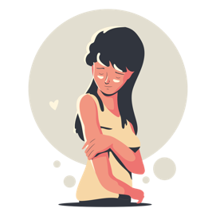

Mis planes a futuro son muy estructurados y realmente me gustaría llegar a ellos, son grandes metas que lograrán mucho en mi vida. Estos se basan en el ámbito personal y en el profesional.
Planes profesionales
El plan más cercano es entrar a la Facultad de Medicina, ya que hace poco me di cuenta que realmente quiero dedicarme al ámbito de la medicina. Anteriormente quería irme a la Facultad de Arquitectura (por esa razón tengo optativas referente al área de matemáticas), pero me di cuenta que no era algo que deseaba; me iba a ir bien, probablemente, aunque no la iba a pasar del todo bien por el motivo que no es lo que me apasiona.
Si llego a entrar en la Facultad de la UADY, luego de terminar la carrera de médico cirujano me iría a la especialidad de Urgencias Médico-quirúrgicas, es la especialidad que llama más mi atención y me siento muy capaz de desarrollarme muy bien en ese campo, me causa mucha ilusión estudiar todo lo que abarca.
En el caso que no llegue a entrar a la Facultad de Medicina, mi otro plan es inscribirme a la naval y estudiar médico cirujano. Realmente me entusiasma la idea de acudir a la naval, pero mi prioridad es quedarme en la facultad de la UADY.
Después de graduarme, me gustaría simplemente tener un trabajo en el cual pueda ayudar a todas las personas que pueda, poder brindar mis servicios con calidad y mucho amor.
Planes personales
Mi mayor plan a nivel personal es aprender a tener amor propio, siento que el mío es inexsistente y eso causa que la depresión y ansiedad se presenten con frecuencia, cosa que detesto. Me gustaría sentirme orgullosa de mí sin tanto problema como lo es ahora.
Así mismo, unos de mis planes es lograr independizarme a penas me sea posible, me gustaría demasiado aprender a valerme por mí misma. De igual manera, otro plan es poder viajar con mi familia y llevarlos a conocer aunque sea un lugar que ellos quieran, me haría muy feliz cumplirles uno de sus sueños.